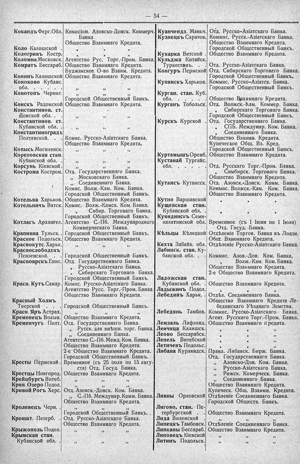

Лист источника 100
Скан

Распознанный текст
54
Кокандъ Ферг.Обл. Комисіон. Азовско-Донск. Коммерч.
Банка.
Общество Взаимнаго Кредита.
Коло Калишской ” ” ”
Кологривъ Костр. ” ” ”
Коломна Московск. Агентство Рус. Торг.-Пром. Банка.
Комратъ Бессараб. Общество Взаимнаго Кредита.
Буджакское О-во Взаим. Кредита.
Конинъ Калишской Общество Взаимнаго Кредита.
Коноково Кубанс.
обл. . . . . ” ” ”
Конотопъ Черниг. ” ” ”
Городской Общественный Банкъ.
Конскъ Радомской Общество Взаимнаго Кредита.
Константинов. ст.
Донской обл. . ” ” ”
Константинов. ст.
Кубанской обл. . ” ” ”
Константиноградъ
Полтавской. . Комис. Русско-Азіатскаго Банка.
Общество Взаимнаго Кредита.
Копысь Могилевск. ” ” ”
Кореновская стан.
Кубанской обл. . ” ” ”
Корсунь Кіевской . ” ” ”
Кострома Костром. Отд. Государственнаго Банка.
„ Московскаго Банка.
„ Соединеннаго Банка.
Комис. Волж.-Кам. Ком. Банка.
Городской Общественный Банкъ.
Котельва Харьков. Общество Взаимнаго Кредита.
Котельничъ Вятск. Комис. Волж.-Камск. Ком. Банка.
” Сибир. Торговаго Банка.
Городской Общественный Банкъ.
Котласъ Архангел. Агентство С.-Пб. Международнаго
Коммерческаго Банка.
Крапивна Тульск. . Городской Общественный Банкъ.
Красное Подольск. Общество Взаимнаго Кредита.
Краснокутс. Харьк. ” ” ”
Краснослободскъ
Пензенской. . Городской Общественный Банкъ.
Красноярскъ Енис. Отд. Государственнаго Банка.
„ Русско-Азіатскаго Банка.
„ Сибирскаго Торговаго Банка.
Городской Общественный Банкъ.
Красн. Кутъ Самар. Комис. Русско-Азіатскаго Банка.
Агентство Русс. Торг.-Пром. Банка.
Общество Взаимнаго Кредита.
Красный Холмъ
Тверской . . . Городской Общественный Банкъ.
Красн. Яръ Астрах. ” ” ”
Кременецъ Волын. Общество Взаимнаго Кредита.
Кременчугъ Полт. Отд. Государственнаго Банка.
„ Русск. для внѣшн. торг. Банка.
„ Соединеннаго Банка.
Агентство С.-Пб. Межд. Ком. Банка.
Общество Взаимнаго Кредита.
2-е Общество Взаимнаго Кредита.
Городской Общественный Банкъ.
Кресты Пермской . Временное (съ 25 іюля по 15 авгу-
ста) Отд. Госуд. Банка.
Крестцы Новгород. Общество Взаимнаго Кредита.
Крейцбургъ Витеб. ” ” ”
Крив. Озеро Подол. ” ” ”
Кривой Рогъ Херс. Отд. Азовск.-Донск. Ком. Банка.
С.-Пб. Междунар. Комм. Банка.
Общество Взаимнаго Кредита.
Кролевецъ Черн. ” ” ”
Городской Общественный Банкъ.
Кроншт. Петерб. Отд. Русско-Азіатскаго Банка.
Общество Взаимнаго Кредита.
Крыжополь Подол. ” ” ”
Крымская стан.
Кубанской обл. . ” ” ”
Куанчендз. Маньч. Отд. Русско-Азіатскаго Банка.
Кузнецкъ Саратов. Коммис. Русск.-Азіатскаго Банка.
Общество Взаимнаго Кредита.
Городской Общественный Банкъ.
Кукарка Вятской . Общество Взаимнаго Кредита.
Кульджа Китайск.
Туркестанъ. . Отд. Русско-Азіатскаго Банка.
Конгуръ Пермской Отд. Сибирскаго Торговаго Банка.
Городской Общественный Банкъ.
Купянскъ Харьков. Коммис. Русско-Азіатск. Банка.
Городской Общественный Банкъ.
Курган. стан. Куб.
обл. . . . . . Общество Взаимнаго Кредита.
Курганъ Тобольск. Отд. Волжск.-Кам. Коммер. Банка.
” Сибирскаго Торговаго Банка.
Городской Общественный Банкъ.
Курскъ Курской . Отд. Государственнаго Банка.
• СПБ. Междунар. Ком. Банка.
• Соединеннаго Банка.
Общество Взаимн. Кредита.
Купеческое Общ. Вз. Кред.
Городской Общественный Банкъ.
Куртамышъ Оренб. Общество Взаимнаго Кредита.
Кустанай Тургайс.
обл. . . . . . Отд. Русскаго Торг.-Пром. Банка.
„ Симбирск. Торговаго Банка.
Общество Взаимнаго Кредита.
Кутаисъ Кутаисск. Отд. Азовск.-Донск. Комм. Банка.
Коммис. Волжск.-Кам. Ком. Банка.
Общество Взаимнаго Кредита.
Кутно Варшавской ” ” ”
Кущевская стан.
Кубанской обл. . ” ” ”
Куяндинскъ Семи-
палатинской обл. Временное (съ 1 Іюня по 1 Іюля)
Отд. Госуд. Банка.
Кѣльцы Кѣлецкой Отдѣленіе Торгов. Банка въ Лодзи.
Общ. Взаимнаго Кредита.
Кяхта Забайк. обл. Отдѣленіе Русско-Азіатскаго Банка.
Лабинск. стан. Ку-
банской обл. . . Коммис. Азов.-Дон. Ком. Банка,
” Волж.-Кам. Ком. Банка.
Общество Взаимнаго Кредита.
2-е Общество Взаимнаго Кредита.
Ладожская стан.
Кубанской обл. . Общество Взаимнаго Кредита.
Ладыжинъ Подол. ” ” ”
Лебединъ Харьк. . Отдѣл. Соединеннаго Банка.
Общество Взаимнаго Кредита Ле-
бединскаго Уѣзднаго Земства.
Лебедянь Тамбов. Коммис. Русско-Азіатскаго Банка.
Агент. Русскаго Торг.-Пром. Банка.
Лемзаль Лифлянд. Общество Взаимнаго Кредита.
Ленчица Калишск. ” ” ”
Леово Бессарабск. ” ” ”
Лепель Витебской ” ” ”
Летичевъ Подолье. ” ” ”
Либава Курляндск. Правл. Либавск. Бирж. Банка.
Отд. Государственнаго Банка.
„ Азовско-Дон. Ком. Банка.
„ Русско-Азіатскаго Банка.
„ Рижск. Комерческ. Банка.
„ Соединеннаго Банка.
Общество Взаимнаго Кредита.
Купеческ. Общ. Взаимн. Кредита.
Ливны Орловской Отдѣленіе Соединеннаго Банка.
Городской Обществ. Банкъ.
Лигово, стан. Пе-
тербургской . . Общество Взаимнаго Кредита.
Лида Виленской . ” ” ”
Липецкъ Тамбовск. Отдѣленіе Соединеннаго Банка.
Липканы Бессараб. Общество Взаимнаго Кредита.
Липовецъ Кіевской ” ” ”
Литинъ Подольск. ” ” ”